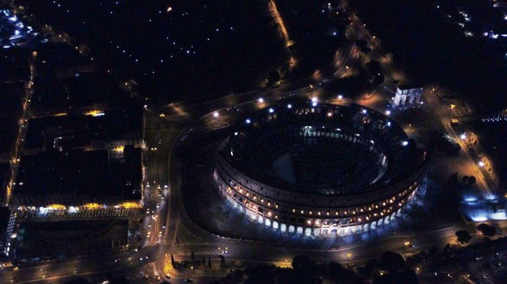

Sentenza di primo grado
Il 20 luglio seguente nella sentenza di primo grado emessa dalla 10ª sezione del Tribunale penale di Roma, viene derubricata l'associazione a delinquere
di stampo mafioso in associazione semplice e confermate le accuse di corruzione, perciò Massimo Carminati è stato tolto dal regime di carcere duro (41 bis) riservato ai detenuti mafiosi.
Il processo d'appello
Il 6 marzo 2018 inizia il processo d'appello. I PM sostengono ancora che si tratti di un'associazione di stampo mafioso, chiedendo la detenzione
a 25 anni per Buzzi e 26 anni per Carminati, e il ripristino dell'articolo 416 bis. L'11 settembre dello stesso anno la terza sezione della Corte
d'Appello di Roma ripristina il disposto dell'art. 416 bis c.p., riconoscendo la sussistenza del "metodo mafioso".
La Cassazione
Il 22 ottobre 2019 la Corte suprema di cassazione annulla l'aggravante mafiosa a carico degli imputati, rilevando solo associazioni "semplici".
Delibera inoltre la celebrazione di un nuovo processo d'appello per ricalcolare le pene
per Buzzi, Carminati e i principali imputati del processo al Mondo di mezzo.
Ci saranno da ridefinire le pene di 24 dei 32 condannati.